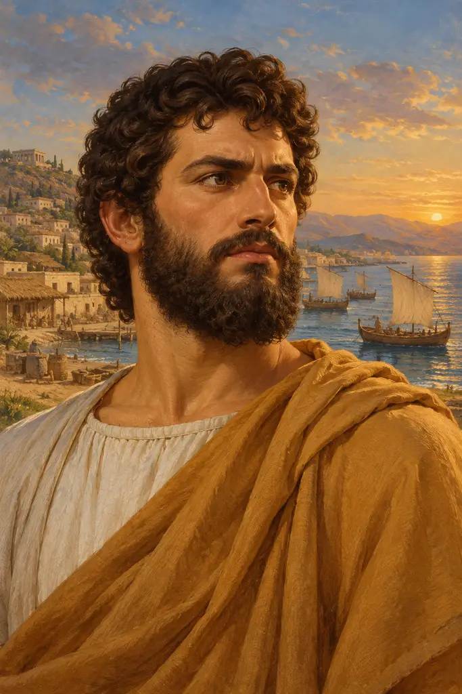
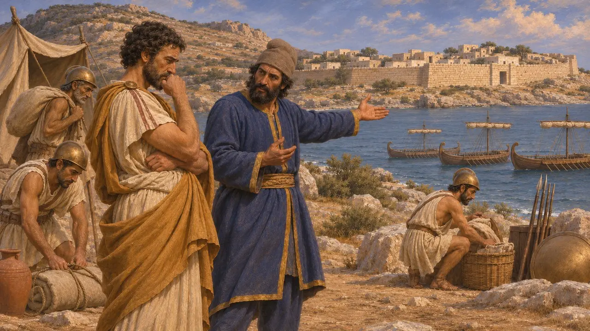
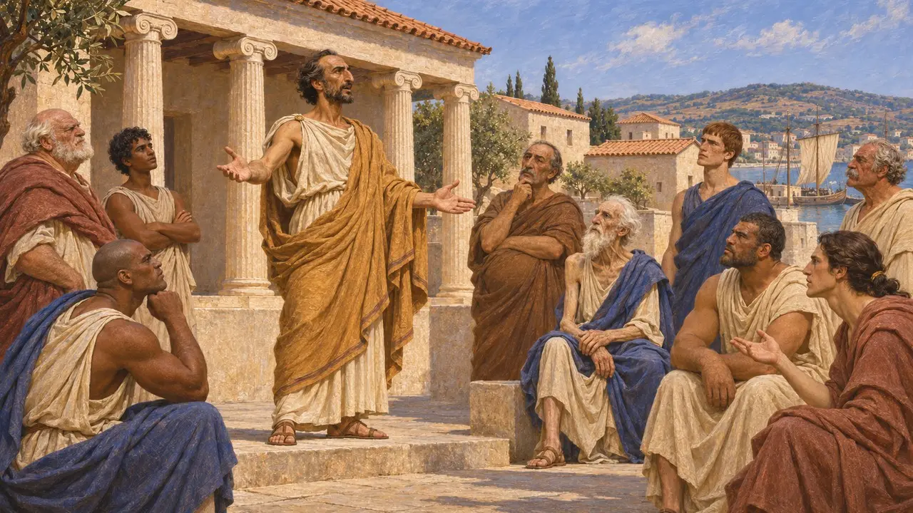
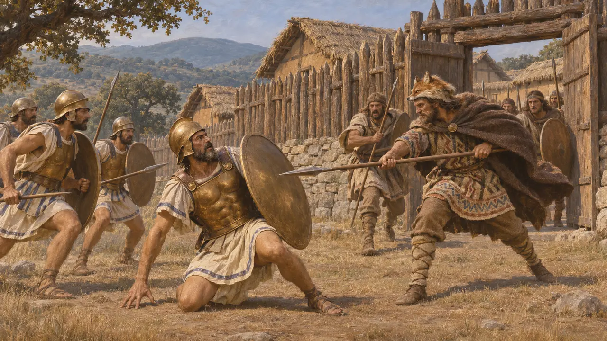
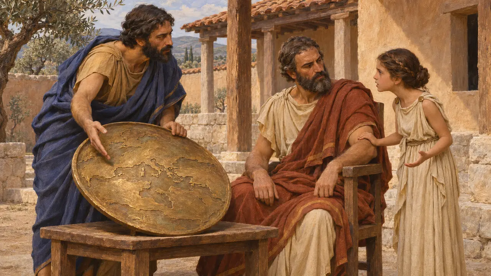
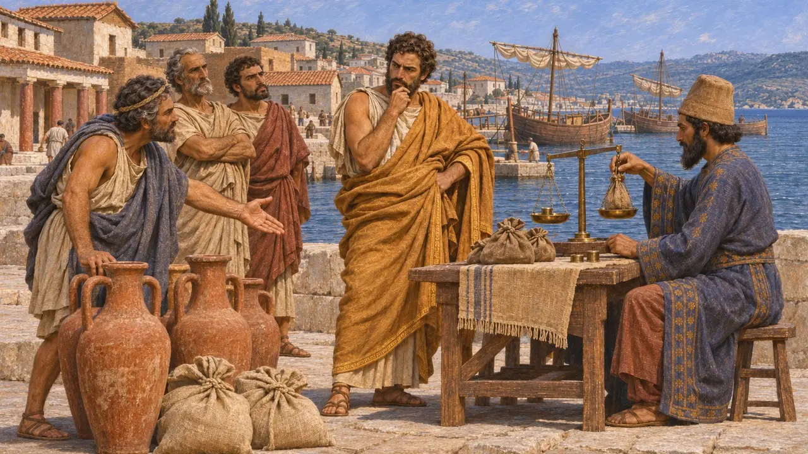

Аристагор Милетский
Наместник тирана в Милете и вождь Ионийского восстания, погиб около 497 года до н. э.
В игре: Уровень 7: Сарды в огне
Аристагор правил Милетом от имени своего родича Гистиея. В 499 году до н. э. он обратил неудачный персидский поход на Наксос в восстание ионийских городов. Он втянул в войну афинские и эретрийские корабли, и Геродот видел в этом начало долгого противостояния Персии и греков.
В игре: Игра называет его только в заметках летописи — как тирана Милета, который возглавил восстание 499 года до н. э. и получил корабли от Афин и Эретрии. Строго говоря, он правил Милетом как заместитель Гистиея, а не самостоятельно.

Наместник в Милете и наксосская затея
Античное свидетельствоПо словам Геродота, Аристагор, сын Молпагора, был двоюродным братом и зятем Гистиея — тирана Милета, которого Дарий держал при своём дворе. Аристагор правил городом как его наместник. Когда изгнанники с Наксоса попросили о помощи, он убедил Артаферна, сатрапа в Сардах, поддержать нападение, и Дарий одобрил поход флота под началом Мегабата. Осада длилась четыре месяца и окончилась неудачей, и Аристагор не смог исполнить своих обещаний.
Herodotus 5.30-35

Восстание и поиск союзников
Античное свидетельствоВ 499 году до н. э., по словам Геродота, Аристагор сложил с себя тиранию, провозгласил равноправие милетян и велел схватить поставленных персами тиранов других ионийских городов. Затем он отплыл в материковую Грецию, где Клеомен Спартанский ему отказал, но Афины прислали двадцать кораблей, а Эретрия — пять. В 498 году до н. э. союзники двинулись вглубь страны и сожгли Сарды. Аристагор остался в Милете и передал командование своему брату Харопину и Гермофанту.
Herodotus 5.37-38, 5.49-51, 5.97-102

Бегство и гибель во Фракии
Античное свидетельствоКогда персидские войска вернули Кипр и города Геллеспонта и Карии, Аристагор покинул Милет — Геродот объясняет это недостатком мужества. Он передал город уважаемому гражданину по имени Пифагор и отплыл в Миркин, фракийский город, который Дарий некогда пожаловал Гистиею. Фракийцы убили его при осаде соседнего города, вероятно, около 497 г. до н. э. или 496 года до н. э. Восстание продолжалось без него вплоть до поражения ионийцев при Ладе в 494 году до н. э.
Herodotus 5.108-126

Татуированная голова и медная карта
Позднейшая легендаГеродот рассказывает, что Гистией, удерживаемый в Сузах, обрил голову рабу, наколол на ней призыв к восстанию и отправил его, когда волосы отросли. В Спарте, по его словам, Аристагор показал Клеомену медную карту мира и предлагал всё большие взятки, пока юная дочь царя Горго не предостерегла отца, что чужеземец его развратит. Обе истории построены как назидательные рассказы и не поддаются проверке.
Herodotus 5.35, 5.49-51

Почему восстала Иония
СпорныйГеродот объясняет восстание личными честолюбивыми замыслами и страхами Аристагора и Гистиея. Современные историки смотрят шире: одни указывают на недовольство тиранами, поставленными Персией, другие — на бремя дани и военной службы или на давление на ионийскую торговлю. Какой из причин придавать больший вес, спорят до сих пор. Ни один персидский текст не упоминает Аристагора, поэтому эти события известны лишь по греческим авторам.
O. Murray, 'The Ionian Revolt', Cambridge Ancient History IV, 1988; P. Briant, From Cyrus to Alexander, 2002
Источники
- Herodotus, Histories, book 5 (5.30-38, 5.49-51, 5.97-126)
- O. Murray, 'The Ionian Revolt', Cambridge Ancient History IV, 1988
- P. Briant, From Cyrus to Alexander, 2002
- A. Kuhrt, The Persian Empire: A Corpus of Sources from the Achaemenid Period, 2007